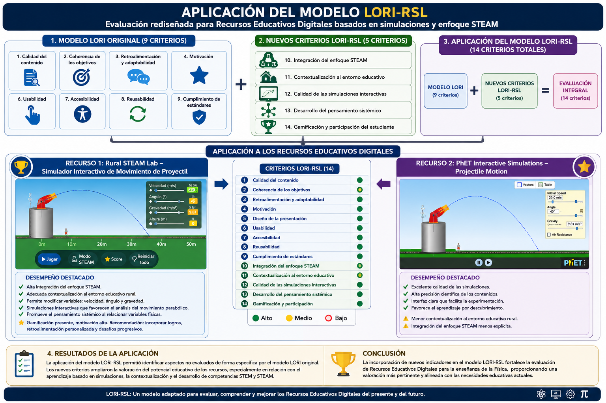

Rediseño: Modelo LORI-RSL
Modelo LORI-RSL
La evaluación de los Recursos Educativos Digitales constituye un proceso dinámico que debe responder a las necesidades del contexto educativo en el que serán utilizados. Aunque el modelo LORI (Learning Object Review Instrument) ofrece una evaluación integral de los aspectos pedagógicos y tecnológicos de los recursos digitales, la aplicación realizada en este trabajo permitió identificar algunos elementos que no son considerados de manera explícita dentro de sus criterios originales y que resultan relevantes para evaluar recursos educativos basados en simulaciones y metodologías activas.
Durante la evaluación de los simuladores Rural STEAM Lab – Movimiento de Proyectil y PhET Interactive Simulations – Projectile Motion, se evidenció la necesidad de incorporar indicadores que permitan valorar aspectos relacionados con el enfoque STEAM, la contextualización del aprendizaje, el uso de simulaciones interactivas y el desarrollo de competencias del siglo XXI. Por esta razón, se propone la adaptación del modelo LORI, manteniendo su estructura original e incorporando nuevos criterios acordes con las necesidades de la práctica pedagógica.
La propuesta consiste en conservar los nueve criterios originales del modelo LORI, incorporando cinco nuevos criterios que permitan realizar una evaluación más completa de los Recursos Educativos Digitales utilizados en la enseñanza de la Física y otras áreas apoyadas por tecnologías digitales.
Nuevos indicadores
| Nuevo criterio | Descripción |
|---|---|
| Integración del enfoque STEAM | Evalúa si el recurso favorece la integración de las ciencias, la tecnología, la ingeniería, las artes y las matemáticas mediante actividades interdisciplinarias que promuevan la resolución de problemas y el pensamiento crítico. |
| Contextualización al entorno educativo | Valora el grado en que el recurso puede adaptarse a las características sociales, culturales y académicas del contexto donde será utilizado, especialmente en instituciones educativas rurales. |
| Calidad de las simulaciones interactivas | Analiza si las simulaciones representan de manera precisa los fenómenos estudiados, permiten modificar variables, experimentar con diferentes escenarios y favorecer el aprendizaje por descubrimiento. |
| Desarrollo del pensamiento sistémico | Evalúa la capacidad del recurso para promover la comprensión de las relaciones existentes entre diferentes conceptos, procesos y variables, favoreciendo una visión integral de los fenómenos analizados. |
| Gamificación y participación del estudiante | Valora la incorporación de elementos que incrementen la motivación, la participación y el compromiso del estudiante mediante retos, logros, retroalimentación inmediata u otras estrategias propias de la gamificación. |
La incorporación de estos nuevos criterios responde a las características de los Recursos Educativos Digitales utilizados actualmente en los procesos de enseñanza, los cuales integran simulaciones, aprendizaje activo, metodologías STEAM y experiencias interactivas que no siempre son evaluadas de manera específica por los modelos tradicionales.
Diagrama del modelo LORI-RSL

Estructura del modelo LORI-RSL: integración de los nueve indicadores LORI más los cinco nuevos ejes (STEAM, Contextualización, Simulaciones, Pensamiento sistémico, Gamificación).
Justificación del rediseño
La propuesta del modelo LORI-RSL constituye una adaptación del instrumento original orientada a enriquecer la evaluación de Recursos Educativos Digitales mediante la incorporación de criterios acordes con las tendencias actuales de la educación digital. En el caso de Rural STEAM Lab, estos indicadores permiten valorar elementos propios de su diseño pedagógico, como la contextualización rural, el uso de simulaciones para la comprensión del movimiento de proyectil y la integración del enfoque STEAM. De igual forma, estos criterios pueden aplicarse a recursos ampliamente utilizados como PhET Interactive Simulations, favoreciendo una evaluación más completa e integral.
En consecuencia, el modelo adaptado, denominado LORI-RSL, conserva las fortalezas del modelo original e incorpora nuevos indicadores que responden a las necesidades actuales de la educación digital, fortaleciendo la evaluación de Recursos Educativos Digitales utilizados en contextos escolares diversos.